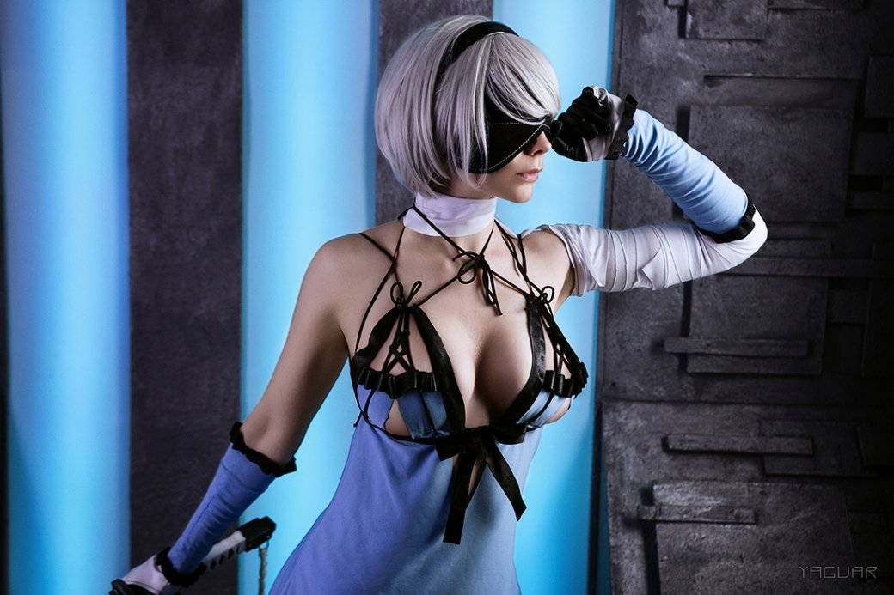
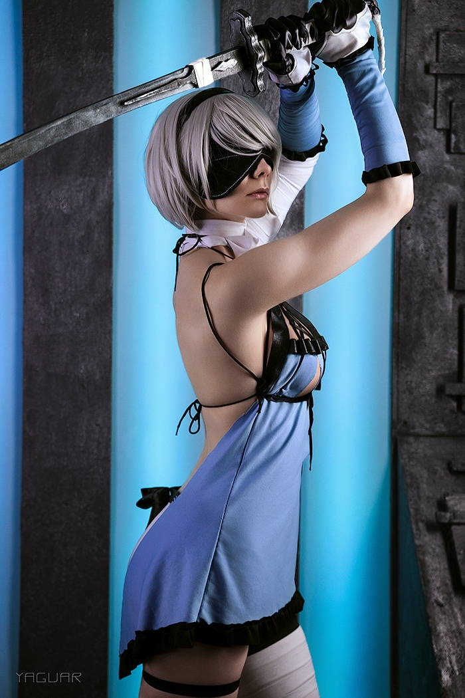
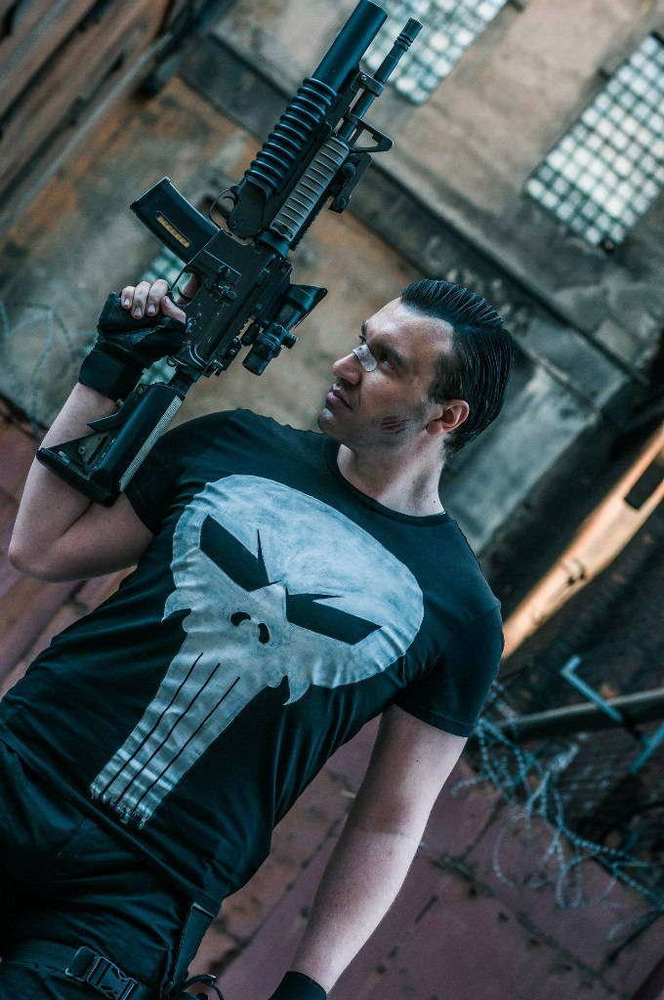
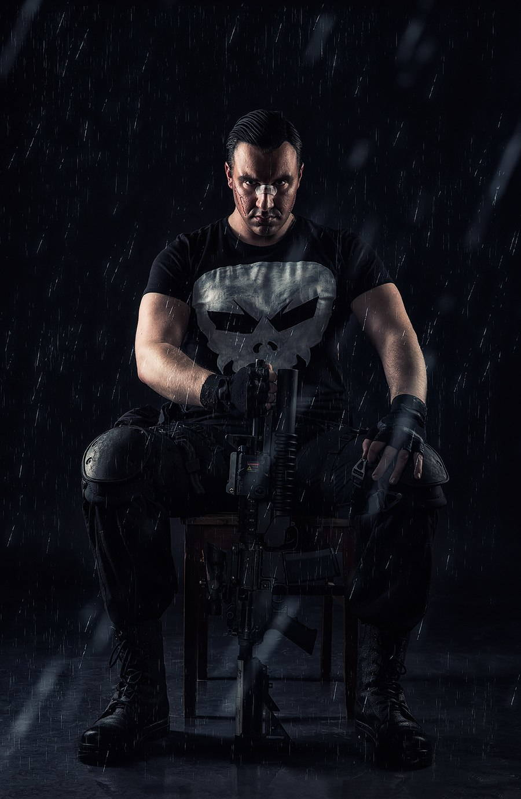
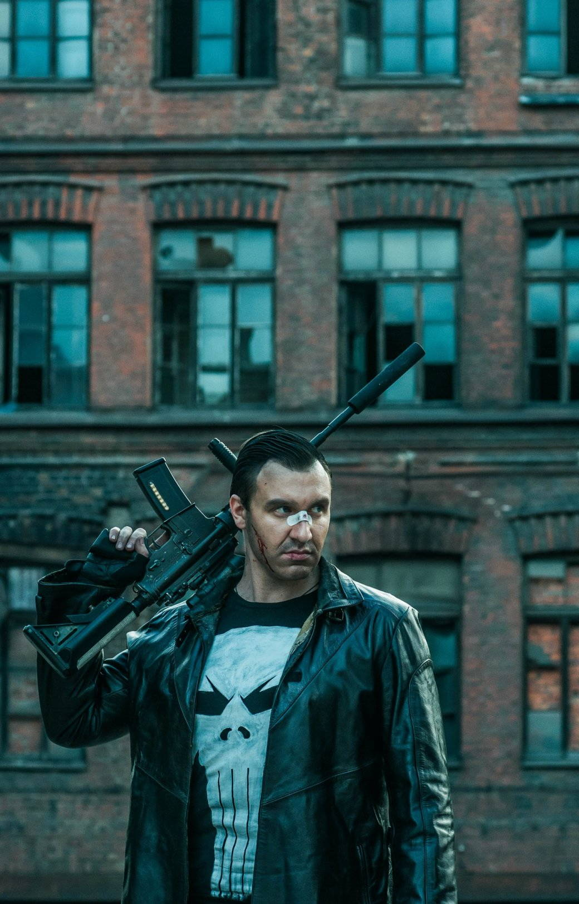
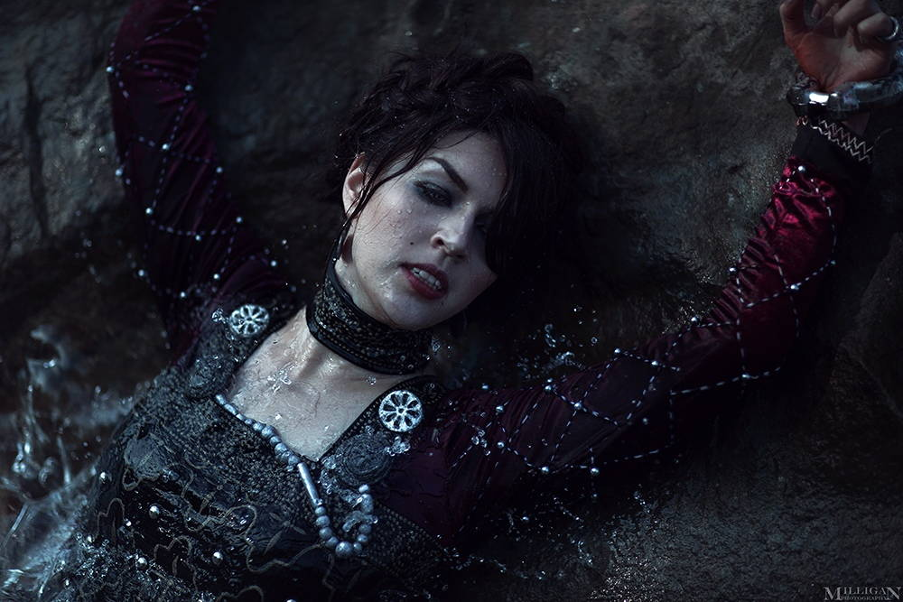
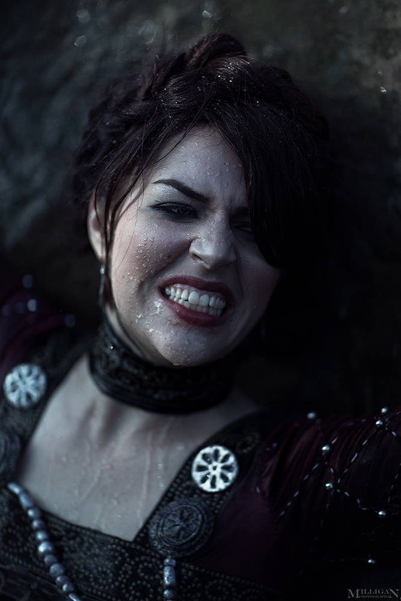
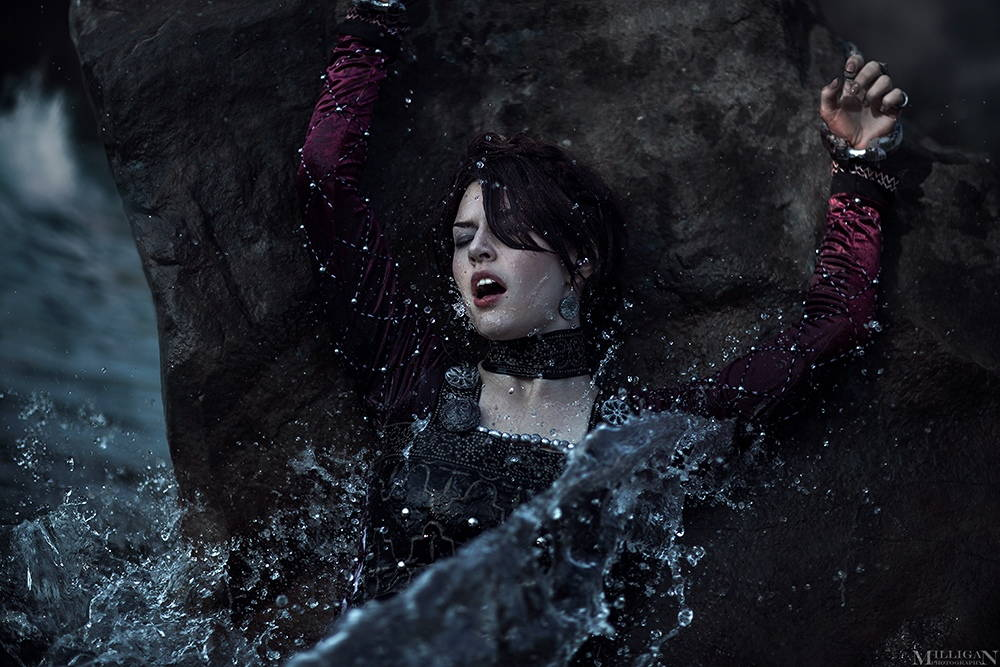

Косплей — это не только красивые костюмы и известные персонажи, это еще и серьезный труд, сопряженный с рядом сложностей. Мы задали несколько вопросов отечественным косплеерам с целью выяснить — с какими трудностями им приходится сталкиваться, что самое тяжелое в работе на фестивалях и как зарабатывать на своем труде.
С чего начать, если хочешь создать образ любимого персонажа? Отвечают косплееры
Александра Реил (Reilin)
С какими сложностями вы сталкиваетесь во время работы на мероприятиях/конвентах?
Именно в работе на конвентах сложностей я не вижу. У меня есть опыт работы на стенде на «Игромире», и единственное, что было тяжело — это быть весь день в костюме! Команда была хорошей: платили, кормили и вообще вниманием мы (косплееры) были не обделены.
Мне кажется, этот вопрос можно рассмотреть в целом — сложность косплея и работы в нем. Это сама публика: на мероприятиях, таких как «Игромир» и «Старкон» публика знает, на что идет и чего ожидать от конвента, отсюда и нет сложностей сильных. А вот если брать более мелкие мероприятия или вообще «около гик-культуры», то там можно столкнуться с неадекватностью зрителей, потому что многие люди, не связанные с косплеем, достаточно враждебно воспринимают это хобби.
Ну и особая сложность работы в таких мероприятиях — сами заказчики, чаще всего они не понимают силозатратность и предлагают уж совсем смешные деньги за работу на мероприятии (хорошо если вообще деньги, а то бывает и за еду зовут работать).
Какие комментарии/отзывы вас расстраивают, а какие наоборот, радуют?
Мне кажется, тут все достаточно очевидно. Расстраивает, конечно, неадекватная критика — без оснований, без выводов, просто вброс, который не несет никакой смысловой нагрузки. Я никогда не понимала, как можно оставить под любой работой злой комментарий, который по сути не никому не интересен и ни на что не влияет. Это расстраивает. А радуют, конечно, любые положительные комментарии. К счастью, в моей жизни больше положительных слов! Именно поддержка моих подписчиков позволяет мне идти дальше и совершенствоваться. В добром мире и жить проще!
Какие сложности возникают в процессе монетизации своего труда?
Монетизация — одна большая сложность. В России, как мне кажется, косплей до сих пор остается в головах людей как хобби, а раз это хобби, значит ты сам себе голова и никто не должен тебе в этом денежно помогать. Никакие патреоны в нашей стране сильных толчков не дают (если вы новичок и среднестатистический косплеер). Наши люди бедны и помогать другим не очень любят.
Зачем платить за принты и открытки, когда я и сам могу их напечатать? Зачем покупать календари, когда я могу и в интернете посмотреть все эти образы? Я думаю, так рассуждает большинство людей, хоть как-то заинтересованных в косплее.
Ну и другой момент тоже очевидный — чаще всего люди готовы поддерживать более сексуальные проекты, что часто опускает большую часть косплееров. Если ты великий крафтер, но не любишь оголять некоторые части своего бренного тела — скорее всего, тебе будет куда более тяжелее собирать денежную помощь за свой труд
В целом — что, на ваш взгляд, можно было бы улучшить или изменить (организацию, отношение людей, отношение косплееров друг к другу и т. д.)?
Улучшить нужно только отношение. И косплееров друг к другу тоже. Косплей — это большая семья, но все чаще и чаще я замечаю зависть, ненависть, ссоры и склоки.
Нас и так обижают диванные зрители, а теперь еще и косплееры обижают косплееров. Не надо так. Также хотелось бы от всех людей понимания — какой это труд, а еще, чтобы было уважение к авторству, в нашей стране, похоже, такое понятие вообще отсутствует. Часто публикуют без подписей, используют твои фотографии в печатной продукции без согласия и, конечно, есть такие, кто вообще сливают эксклюзивы в сеть. Исправить это, наверно, невозможно. Все эти улучшения — идиллия, которая вряд ли когда-то случится.
Есть ли в косплее такое понятие, как плагиат?
Плагиат — конечно. Вот только доказать его сложно. Кто-то проводит идентичные фотосеты, кто-то создает одинаковые образы (не по конкретным вселенным, я имею ввиду, а ориджиналы), а кто-то создает группы и мерч такой же, как у тех, кто смог добиться каких-то высот.
1/3
2/3
3/3

Как вы считаете, надо ли учитывать свои физиологические особенности при создании образа? Например, я невысокий и коренастый, а делаю косплей на Супермена.
В идеале — да. Я за косплей, наиболее приближенный к образу.
Как пробиться новичкам? Вообще, возможно ли это?
Пробиться возможно. Как и в любой деятельности, важна конкурентоспособность. Если ты можешь предложить косплей-миру что-то новое — волна успеха может тебя и подхватить.
Почему большинство косплееров одиночки?
Не знаю как большинство, но лично мне удобнее одной. Это из-за неудачного опыта в косбенде. Когда ты уже давно сделал костюм и связан цепями с другими людьми, которые даже половины еще не завершили в создании образа, а сроки уже горят — это всегда тяжело. Теперь я работаю с другими только тогда, когда и у них, и у меня уже готовы образы, и мы можем провести совместный фотосет или выступить. В других случаях я боюсь подстав и нервотрепки.
Александр Вольф
С какими сложностями вы сталкиваетесь во время работы на мероприятиях/конвентах?
Да их масса. Один из главных — физически и морально тяжело несколько дней ходить в тяжелом/неудобном костюме с гримом и постоянно быть в образе. По мере того, как у меня появилось много друзей в косплей-тусовке, сохранять образ постоянно стало нереально, потому как общение, юмор и встречи после долгих месяцев разлуки выводят твои эмоции наверх, там уже невозможно оставаться в образе, поэтому учусь прыгать туда-сюда в плане отыгрыша.
Еще на больших конвентах бывают не очень адекватные зрители, но пока откровенно диких случаев почти не было.
Какие комментарии/отзывы вас расстраивают, а какие наоборот, радуют?
Раньше расстраивал тупой необъективный хейт от русского сообщества, но теперь я с него скорее люблю посмеяться. Очень радует конструктив и похвала по делу, внимание от разработчиков, конечно!
Вот недавно мои фотографии выложили ребята из CD PROJEKT RED во всех соцсетях Cyberpunk 2077 — я был в приятном шоке.
>Initializing face recognition software
— Cyberpunk 2077 (@CyberpunkGame) 9 января 2019 г.
>Character recognized: Jackie Welles
>Cosplayer recognized: @AlexWolfCosplay #Cyberpunk2077 pic.twitter.com/LpgDbdyMsZ
Какие сложности возникают в процессе монетизации своего труда?
Да всевозможные. На самом деле, в России очень сложно монетизировать творчество в принципе, так как в РФ не принято платить ни за что нематериальное: люди пиратят кино, музыку и т. д., донатить косплеерам здесь готов 1 из 100, если не меньше. В основном получается на волне внимания фандома получить какое-нибудь предложение о работе на мероприятии. Ну и все, в общем-то. У тех, кто хорошо раскрутит соцсети, есть шансы на донат от зарубежных фанатов, некоторые заводят патреон-страницу в таких случаях.
В целом — что, на ваш взгляд, можно было бы улучшить или изменить (организацию, отношение людей, отношение косплееров друг к другу и т. д.)?
Изменить в фестивалях или вообще в сообществе? Всегда можно найти, что улучшить. В основном, хотелось бы как раз увидеть больше возможностей для монетизации своего творчества, так как оно требует существенных финансовых вложений (не говоря уже о времени и усилиях). А касательно фестивалей… у некоторых стоило бы подтянуть организацию, да.
Еще было бы супер упростить получение виз для поездок на зарубежные фестивали, но это уже фантастика!
Есть ли в косплее такое понятие, как плагиат?
Сложный вопрос. С одной стороны, все косплееры, создающие образ по одному и тому же канону, делают примерно одинаковые вещи. С другой, бывают какие-то уникальные находки по материалам или конструктиву. Я затрудняюсь сказать что-то о плагиате в этих ситуациях, ведь часто косплееры делятся находками и помогают друг другу. Но бывают неприятные ситуации, которые в основном завязаны на копировании чужих фотографий (прямо полностью) или необычных идей для фото. Такое, конечно, напрягает, особенно, если человек делает это некачественно и пытается обогнать того, у кого идею подрезал. Такое я не люблю.
Как вы считаете, надо ли учитывать свои физиологические особенности при создании образа? Например, я невысокий и коренастый, а делаю косплей на Супермена.
Здесь есть две противоположные позиции:
- Крайняя левая считает, что кто угодно должен делать кого угодно и чем меньше похоже, тем «смелее» человек и больше заслуживает внимания.
- Крайняя правая считает, что если есть хотя бы одно отличие от канона, то косплей провальный.
Разумеется, обе крайности весьма бредовые, моя позиция: здравый смысл. Если ты не полная копия персонажа, то это не значит, что надо забить на идею, ведь есть грим, мышечные костюмы, ходули и прочие нюансы. НО: если ты совсем не того типажа и не готов лепить грим и все остальное, чтобы сделать круто, то не надо делать заранее провальный контент. Цель: быть максимально каноничным. 120 килограммов жира в образе спортивного супергероя — не смелость, а неумение найти себе подходящий образ.
Если делаешь для себя, потому что очень хочешь, хотя и не похож, то сфоткайся и не выкладывай. Пусть будет для личного архива.
Как пробиться новичкам? Вообще, возможно ли это?
Возможно, если делать очень качественно и сильно стараться в сторону медийности. Не знаю, поверите ли, но 2,5 года назад меня не знал никто. Я просто вложил много денег и сил, а потом еще, и еще, и еще. А когда нашел идеального гримера, стало еще немного проще, и я продолжил с новой силой.
Мой совет: работайте над качеством исполнения во всем — от контроля качества заказных элементов до последнего движения на сцене! Удивляйте зрителя, ошеломляйте его.
И старайтесь быть везде в соцсетях, не жалейте сил на то, чтобы предложить себя везде, где это уместно!
Почему большинство косплееров одиночки?
Потому что люди ленивы и ненадежны. Чаще всего сделать даже парный образ и дефиле — весьма сложно, если второй участник не твой близкий друг. А если в команде больше двух людей, их координация — уже пятый круг ада. А ведь чаще всего одной координации недостаточно… я много занимался проджект-менеджментом в разных творческих областях. Это тяжкий труд, и, когда за это не платят, заниматься этим долго и очень сложно.
Maria Hanna
С какими сложностями вы сталкиваетесь во время работы на мероприятиях/конвентах?
Не могу сказать, что были какие-то запредельные сложности. Зачастую бывает элементарно некогда/неудобно поесть/попить, а в костюме жарко.
Какие комментарии/отзывы вас расстраивают, а какие наоборот, радуют?
Приятно, когда замечают детали, над которыми я упорно трудилась. Неприятно, когда ребята сравнивают косплееров между собой. У всех разный подход, набор скиллов и видение персонажа.
Какие сложности возникают в процессе монетизации своего труда?
Я делаю костюмы на заказ, и могу сказать, что наибольшим спросом пользуются популярныеи недорогие костюмы, а это совсем не моя история.
В целом — что, на ваш взгляд, можно было бы улучшить или изменить (организацию, отношение людей, отношение косплееров друг к другу и т. д.)?
В последнее время косплей все больше популяризируется, и отношение людей, не знакомых с этим видом творчества, как мне видится, стало лучше, что не может не радовать.
Отношение косплееров друг к другу — вопрос внутренней культуры каждого из них.
Есть ли в косплее такое понятие, как плагиат?
Я слышала о таких случаях: косплеер дорабатывает оригинал деталями, которые сам придумал, а другой копирует это все целиком. Сталкивалась с тем, что мои фотографии копируют в плане позы, деталей и интерьера. Мне это льстит!
Как вы считаете, надо ли учитывать свои физиологические особенности при создании образа? Например, я невысокий и коренастый, а делаю косплей на Супермена.
Хотите 100% попадания в образ — учитывайте все. Хотите фана — выбирайте любой образ и получайте удовольствие!
Как пробиться новичкам? Вообще, возможно ли это?
Пробиться куда? Добиться популярности? Брать призы на фестивалях? Мне такие цели всегда казались странными. Когда в работу душа вложена, ее непременно заметят. Делайте то, от чего ловите кайф, вот мой совет.
Почему большинство косплееров одиночки?
Работа в команде всегда сложнее.
Святослав Любимов (Kensatsu-kan)
VK | Паблик косбэнда | Instagram
С какими сложностями вы сталкиваетесь во время работы на мероприятиях/конвентах?
Если имеется в виду оплачиваемая работа, к примеру, на стенде, то об этом я знаю мало, так как сам бывал в такой роли всего 1-2 раза.
Если речь идет об аккредитованных\конкурсных косплеерах, то стоит давно развеять миф, что нам за это платят какие-то деньги. Единственное, что получает аккредитованный косплеер — это бесплатный проход на фестиваль и в гримерку.
Если говорить о проблемах, то в первую очередь на ум приходят некультурные посетители, не понимающие, что косплеер такой же человек и его также нужно уважать. Еще жара или холод в помещениях где проводится мероприятие, приносят дискомфорт.
Какие комментарии/отзывы вас расстраивают, а какие наоборот, радуют?
Расстраивают? Наверно никакие. Максимум реакции — это грустная улыбка. Такую реакцию вызывают обычно необоснованная критика (вернее, комментатор думает, что это критика) и придирки к абсолютно незначительным вещам. Косплееры даже «коллекционируют» подобные комментарии.
Вообще я для себя вывел два подхода к косплею: условно назовем их «американский» и «отечественный». Думаю, мог бы даже научную работу написать на эту тему.
Но если вкратце, то я бы призывал «комментаторов» придерживаться американского подхода: «Не нравится — проходи мимо», но дело в том, что некоторые люди просто не могу не вылить свою желчь в отношении косплеера!
Радуют, конечно же, похвала, особенно от именитых косплееров, которые многого достигли. А особенно приятно, когда твой косплей замечают авторы игры, комикса или фильма, персонажа из которого ты сделал.
Какие сложности возникают в процессе монетизации своего труда?
Должен прояснить, что косплей для меня исключительно хобби. Затратное по деньгам, нервам и времени, но все же хобби. Я никак не монетизирую свою творчество и не стремлюсь к этому, а денежные призы на фестивалях — не более чем приятный бонус, который в лучшем случае отобьет стоимость костюма. Потому вряд ли я смогу вас посвятить в тонкости монетизации косплея.
В целом — что, на ваш взгляд, можно было бы улучшить или изменить (организацию, отношение людей, отношение косплееров друг к другу и т. д.)?
Ох, об улучшениях можно говорить вечно. Но если вкратце, то, конечно же, хотелось бы более уважительного отношения посетителей к труду косплееров. Не редки ситуации когда косплееры с большими костюмами просто не хотят выходить в зал именно потому, что понимают, что вернуться в гримерку они могут с поломанным в разных местах костюмом.
Также посетителям нужно быть более уважительным к девушкам-косплеерам и стоит запомнить, что если у девушки персонаж с «откровенным» костюмом, это не дает право посетителю нарушать ее личное пространство без ее разрешения.
Справедливости ради, стоит отметить, что с каждым годом уровень «воспитанности» посетителей растет, но до идеала еще далеко.
По поводу организации фестивалей советовать что-то сложно. Есть фестивали разного уровня, есть откровенно плохие, и им стоит расти, но если говорить о топовых мероприятиях, то многие аспекты у нас в России нисколько не уступают, а иногда и превосходят европейские или даже американские конвенты, что, безусловно, радует.
Есть ли в косплее такое понятие, как плагиат?
Плагиат? Нет, не встречал подобного в косплей-среде. Безусловно, есть конкуренция между людьми, которые делают одних и тех же персонажей, но чаще всего это выливается только в повышение уровня косплея всех конкурирующих сторон.
Как вы считаете, надо ли учитывать свои физиологические особенности при создании образа? Например, я невысокий и коренастый, а делаю косплей на Супермена.
Вот как раз тут мы и возвращаемся к разделению на два подхода к косплею. Если придерживаться «американского», то, конечно же, любой человек может косплеить любого персонажа и он должен получать похвалу за свои старания. Относительно недавно появилось такая инициатива как «косплей для всех». Думаю это сочетание слов идеально описывает этот подход.
С другой же стороны, если судить по «отечественному» подходу, то необходимо подбирать себе персонажей по комплекции и другим внешним данным. Я как русский человек все же стараюсь подбирать для себя персонажей под стать внешности. О том, получается у меня или нет, судить не мне.
Но в итоге каждый для себя сам решает, какому подходу следовать. В любом случае косплей это творчество, а творчество не имеет границ.
Как пробиться новичкам? Вообще, возможно ли это?
Конечно, можно, ведь все когда-то были новичками. Я начал в 2013 году и считаюсь относительно новичком, так как косплей в полную силу в России развился году примерно в 2007, но, насколько я знаю, первый аниме-фестиваль провели в 1999 году, так что мой опыт по сравнению с опытом этих людей — ничто!
Начать нужно с выбора персонажа для себя. Для первого косплея можно выбрать что-то несложное, главное чтобы «лежала душа» к образу. В первый раз можно сходить гостевым косплеером (это обычный посетитель фестиваля, но в костюме, без аккредитации), и, если понравится атмосфера и реакция публики, то в следующий раз можно сделать более сложный костюм и уже попробовать свои силы в качестве аккредитованного/конкурсного косплеера.
1/4

2/4
3/4
4/4
Почему большинство косплееров одиночки?
С этим я не соглашусь. Множество косплееров объединяются в так называемые косбенды, при чем в них может быть как два человека (как, к примеру, в нашем косбенде BRAINGASM) и до неограниченного количества людей. Также многие косплееры объединяются для какой-то конкретной совместной работы. К примеру, на прошедшем «Игромире» я делал парный косплей Вернона Роше и Бьянки с очаровательной Хаку, которая приехала в Москву аж из Новосибирска специально для этого.
Так что я бы не сказал что «косплеер-одиночка» — это правило.
Бастиан Пикадилли (elysian.rebel)
С какими сложностями вы сталкиваетесь во время работы на мероприятиях/конвентах?
Основная проблема, с которой я сталкивалась — это слабая организация. Выражается это по-разному: от пресловутого «нечем заняться» до реальных проблем (отсутствие волонтеров\организаторов или неработающий интернет в игровой зоне).
Какие комментарии/отзывы вас расстраивают, а какие наоборот, радуют?
Радует, когда люди не только отмечают схожесть с персонажем (что тоже очень приятно!), но и обращают внимание на всю проделанную работу над костюмом. А расстраивает… Не знаю, на стандартные «фу, ну и страшная» или «ваще не похоже» уже давно не обращаю внимания).
1/4
2/4

3/4
4/4
Какие сложности возникают в процессе монетизации своего труда?
Мне кажется, все упирается в раскрутку своего блога и популярность как таковую. Я плохо в этом разбираюсь, если честно, доделать Патреон все никак руки не дойдут.
В целом — что, на ваш взгляд, можно было бы улучшить или изменить (организацию, отношение людей, отношение косплееров друг к другу и т. д.)?
Мне кажется, было бы идеально снизить общий уровень токсичности и перестать относиться к косплею, как к какому-то соревнованию. Это относится как к зрителям, так и к нам, косплеерам.
Есть ли в косплее такое понятие, как плагиат?
А где его нет? К сожалению, да, встречается. Сама с ним сталкивалась.
Как вы считаете, надо ли учитывать свои физиологические особенности при создании образа? Например, я невысокий и коренастый, а делаю косплей на Супермена.
Я считаю, что косплей надо делать в первую очередь для себя. Поэтому, если лично вам нравится Супермен и вы всегда мечтали примерить на себя легендарное трико и красные трусы, то какая разница, какого вы роста? Главное — это получать удовольствие!
К сожалению, конечно, нужно быть готовым, что на конвенте обязательно найдется кто-то, кто пихнет и пошутит в духе «что, Супермен теперь дюймовочка?» (к вопросу о токсичности).
Единственное, что нужно учитывать — и я не устану это повторять — это то, что цвет кожи — это не костюм. Блэк\брайн\йелллоуфейс неприемлем. И мне очень жаль, что об этом вообще приходиться лишний раз говорить.
Как пробиться новичкам? Вообще, возможно ли это?
Я сама новичок, по сути-то. Не знаю, насколько я в позиции давать какие-то советы. Но раз вы у меня берете интервью, значит, получается, возможно?
Почему большинство косплееров одиночки?
А почему Бейонсе решила строить сольную карьеру? Шутка. На самом деле, мне кажется, так удобнее: сам отвечаешь только за свой костюм и за свое выступление, не надо волноваться, что кто-то еще не успеет дошить плащ\загрунтовать наручи\выучить текст на сценку.
Ониксия Софиникум
С какими сложностями вы сталкиваетесь во время работы на мероприятиях/конвентах?
Невоспитанные посетители, и разные мелкие проблемы, связанные с костюмом (духота, сложность передвижения и т. д.)
Какие комментарии/отзывы вас расстраивают, а какие наоборот, радуют?
Никакие не расстраивают, так как научилась абстрагироваться.
Какие сложности возникают в процессе монетизации своего труда?
Сложности в том, что новые люди, которые приходят в косплей, почему-то считают его работой.
А это не так. Косплей в первую очередь хобби. Работой может стать модельная деятельность совместно с косплеем. И даже если вы зарабатываете на косплее, то чаще всего для того что бы сделать новый косплей.
В целом — что, на ваш взгляд, можно было бы улучшить или изменить (организацию, отношение людей, отношение косплееров друг к другу и т. д.)?
Было бы замечательно, если бы люди понимали, что косплееры — такие же фанаты вселенных, которые они косплеят, только вместо того, чтобы заказывать фигурки или создавать арты, видео и т. д., они воссоздают костюмы, оружие, парики и грим тех персонажей — которые им нравятся. Вот и все.
Не считают себя ими, а просто на мгновение становятся ближе к любимому образу. Как в спектакле. Но, когда занавес закрывается, актеры становятся самими собой, со своим бытом, проблемами и радостями.
А отношения среди косплееров, как и в любой среде, где много людей — зависят от воспитанности самих людей, их уважения друг к другу и уважения выбора друг друга.
Есть ли в косплее такое понятие, как плагиат?
Есть, что грустно.
Как вы считаете, надо ли учитывать свои физиологические особенности при создании образа? Например, я невысокий и коренастый, а делаю косплей на Супермена.
Смотря на что ты рассчитываешь. Если хочешь сделать для себя, своего удовольствия и поделится просто, что бы найти единомышленников — вперед!
Если ты хочешь сделать косплей для опледеленного отклика аудитории, то тут уж будь добр максимально подогнать свою внешность под образ: макияж, корсет, каблуки и т. д.
Как пробиться новичкам? Вообще, возможно ли это?
Как пробиться в сообщество коллекционирования игрушечных машинок. Точно так же.
Опять же: косплей — это в первую очередь хобби.
В наше интернет-время можно найти тысячи туториалов по созданию костюмов, париков, доспехов, а так же по созданию макияжа и т. д. Остается трудиться, трудиться и еще раз трудиться.
Почему большинство косплееров одиночки?
Тут кому как удобнее. Не всегда можно найти напарника в косплее, который будет полностью или хотя бы частично разделять твои вкусы.